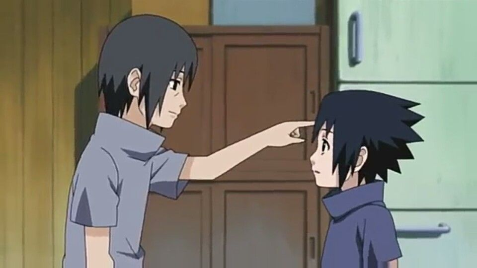

About Itachi
Itachi is a character in the anime "Naruto". He has a complex story line which includes his brother, Sasuke, and the killing of the Uchiha clan.
Itachi with his brother, Sasuke.
Itachi's Life
His early childhood was marked with violence: when he was four years old, the Third Shinobi World War waged and he witnessed first-hand many of the war's casualties.
At age 5, after becoming a big brother to Sasuke, Itachi was approached by Shisui, who offered to train together. Soon, the two became best friends, forming a brother-like bond as they continued to teach the other new tricks.
At age six, Itachi enrolled into the Academy, where he consistently scored the highest in each subject and quickly learned any skill taught to him, resulting in him being praised as the best of his generation. After four months, his teachers unanimously agreed let him take the graduation exam early due to Itachi being more than advanced enough for genin-level, which he passed later that month.
Joining Team 2, Itachi went on to honing his skills to chūnin level, leading to him drawing the attention of Konoha's leaders. Nearly a year since graduating, Itachi had mastered ninjutsu to the extent his missions went too easy. After turning eight, as Team 2's genin had distinguished themselves the most during the year, they were tasked with guarding the Fire Daimyō during his annual trip to Konoha. During the mission, the convoy was attacked by a masked individual, who killed Tenma Izumo before Itachi, resulting in him awakening his Sharingan, which he mastered at the same age.
At age 10, Konoha officials allowed Itachi to compete in the Chūnin Exams by himself, which he passed and became a chūnin.
At age 11, he entered the Anbu. Itachi's accomplishments were a source of great pride for his family, his father viewing him as proof of the Uchiha's future prosperity and his brother viewing him as a model to live up to.
Eventually, the Uchiha's disdain for their unfair treatment led them to plan a coup d'état. Fugaku, head of the Uchiha and the coup's chief conspirator, encouraged Itachi's advancement into the Anbu's ranks as a means of spying on the village. Itachi, however, knew an Uchiha coup would lead to intervention from other villages and ultimately start another World War, something he could not support. He instead became a double agent, reporting the Uchiha's actions to the Third Hokage and the Konoha Council in the hopes it would help them find a peaceful resolution
Itachi shared the burden of betraying his clan with Shisui. But as time went on it became increasingly clear that peace could not be achieved. Shisui intended to use his Kotoamatsukami on the Uchiha's leaders to compel them to negotiate, but his right eye was stolen by Danzō before he had a chance. His own options exhausted, Shisui entrusted his remaining eye to Itachi and begged him to protect the village and their family name before drowning himself in the Naka River.
Itachi was anguished by Shisui's death, enough to awaken his Mangekyō Sharingan. When the following day some Uchiha, already suspicious of Itachi, accused him of murdering Shisui and staging a suicide, Itachi lost his composure and attacked them, defeating them easily.
At age 12, he was promoted to Anbu Captain, with his publicly disclosed promotion age being 13 due to Danzō's request and Hiruzen's acceptance.
Although the Third Hokage still wished to negotiate with the Uchiha, Danzō Shimura recognised that there was no longer an outcome that could see the Uchiha clan's survival. He explained this to Itachi and left him a choice: support the Uchiha's coup and have the whole clan, including Sasuke, killed in the ensuing conflict, or accept the assignment to wipe out the clan before the coup started and be allowed to spare Sasuke. Itachi chose his brother.
In one night Itachi and Tobi slaughtered the entire clan. Itachi took it upon himself to personally execute his parents. Despite his betrayal, they bore him no ill-will, instead telling him in the moments before they were killed that they were proud of him and requesting that he take care of Sasuke.
Racked by grief for his actions, Itachi saw in Sasuke the only person suitable to punish him for his crimes. In order to set Sasuke on this road he cast himself as the villain, done by allowing Sasuke to find him standing over their parents' bodies and using Tsukuyomi to torment him with visions of their murders. Sasuke fled, fearing his own death, but Itachi chased him down to divulge the lie he had concocted: he killed their family to test his mettle and now wanted to test himself against the only remaining challenge to him, the little brother he had never loved. He encouraged Sasuke to become strong enough to kill him and take revenge, and to that end suggested he acquire a Mangekyō Sharingan of his own. Itachi left, but was surprised to find Sasuke already pursuing him with a newly-awakened Sharingan. Sasuke's attempt at vengeance failed and he passed out, but not before seeing Itachi cry with remorse.
Itachi left the village publicly a traitor but secretly with a new mission: to infiltrate Tobi's organisation, Akatsuki, and keep it from moving against Konoha.
Even though he did it for Sasuke, Itachi wanted to be punished for his crimes and selected Sasuke as the one to take vengeance against him. To push Sasuke in this direction, Itachi withheld the true reason for his actions and instead took on the persona of a man who had no love for his younger brother. Per the persona, Itachi cared about Sasuke only because of the eyes that he could take to gain Eternal Mangekyō Sharingan. His actions in Akatsuki were meant to reinforce this persona, and whenever he met Sasuke over the years he would taunt his weakness and encourage him to get strong enough to kill him. His plan was that, once he had been killed, Sasuke would be hailed as a hero.